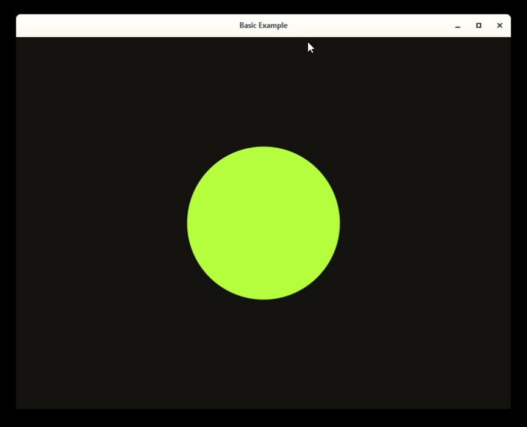

Quick start
In this section you will learn how to use Lynx to build your apps.
Make sure to have the Lynx.jl package installed, as usual with:
julia> ] add LynxBasic example
First, don't forget to load the package:
using LynxSince we are gonna use the Luxor.jl package a lot for drawing operations, it makes sense to install as a direct dependency as well.
julia> ] add LuxorThen, load with:
using LuxorThere are two different ways to use Lynx to create visualizations: using a LynxApp or using Widgets to build the UI. We are gonna use the LynxApp to build this first example.
The LynxApp contains everything we need to build a simple visualization app: a Canvas, a Window and a Layout mechanism to determine how the widgets are displayed.
First, we create our LynxApp using the init function:
Lynx.init("Basic Example", 800, 600)The init function expects the title, width and height of the window as parameters.
The, we define our setup and update functions:
function setup()
@info "Canvas width is $(@width) and height is $(@height)"
endThe setup function is optional. It is useful for initialization. For example, when you need to know the width and height of the Canvas.
Then, we create our update function.
time = 0.0 # the amount of time that has passed
function update(dt)
background("#111")
sethue("yellowgreen")
origin()
radius = 50 * (cos(time) + 2)
circle(O, radius, :fill)
# update the time
global time += dt
endWe also define a time variable to keep track on how much time has passed since the first frame.
The update function expects a single argument dt, which is the amount of time between the last and the current frame.
The, we run our application using the run! function, passing the update and setup functions:
run!(update, setup)Here is all the code for this example:
using Lynx
using Luxor
Lynx.init("Basic Example", 800, 600)
function setup()
@info "Canvas width is $(@width) and height is $(@height)"
end
time = 0.0 # the amount of time that has passed
function update(dt)
background("#111")
sethue("yellowgreen")
origin()
radius = 50 * (cos(time) + 2)
circle(O, radius, :fill)
# update the time
global time += dt
end
run!(update, setup)If you run the code above in the julia REPL, the output will look like this:
